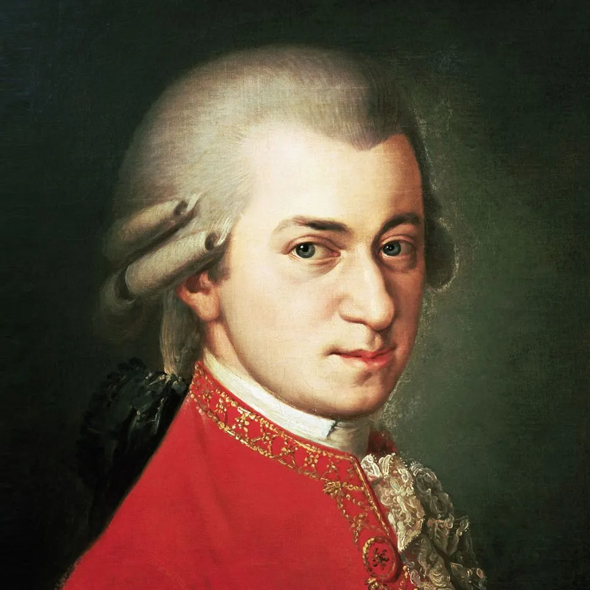

莫扎特

沃尔夫冈·阿马德乌斯·莫扎特（Wolfgang Amadeus Mozart，1756—1791），奥地利作曲家。 在西方音乐历史中，莫扎特经常被称作为“神童”，虽然只活了35年，但他对西方音乐的影响十分深远。
莫扎特的一生大概可以划分为三个时期：
一、第一时期（1756—1771）
莫扎特1756年出生在奥地利的萨尔兹堡，从小就受到他音乐家爸爸的严格教导。莫扎特从能听懂话开始，他爸就给他疯狂灌输音乐知识，教他弹琴作曲。6岁的莫扎特已经可以跟着爸爸和姐姐一起到各国宫廷演出了，一点不给同龄的小孩留活路。 此后的十年期间，莫扎特到维也纳、巴黎、伦敦、罗马等欧洲重要的城市和宫廷演出，在积累了音乐演奏和创作经验的同时，也大大的开阔了眼界。
莫扎特从5岁开始作曲，这一时期创作了弥撒、赞美诗等宗教作品；歌剧、独唱曲等声乐作品；奏鸣曲、协奏曲、交响曲、嬉游曲、舞曲、重奏等器乐作品。值得一提的是，有学者认为，莫扎特在这一时期的音乐创作基本是在他爸的辅导和修改下完成的，而且这一时期的绝大多数作品都体现了他爸的创作痕迹，而莫扎特自己的创作是什么样，可能只有他爸知道。这个学者还说，在这一时期有8首作品是可以看出莫扎特的独立音乐风格的，具体哪8首他也没说，让人有点憋气。
整体来看，这一时期的莫扎特在音乐上处于学习和积累的阶段，音乐风格与他后来的作品相比，还不是特别成熟。莫扎特作为一个“神童”，音乐天赋肯定是有的，但在这个“神童”的身上，更能感受到的是他爸的教育与培养。没有他爸，莫扎特应该也很难成为“莫扎特”。
在莫扎特这一时期期的创作中，还要数歌剧、交响乐、钢琴协奏曲最突出。
歌剧
莫扎特：歌剧Mitridate, re di Ponto，1770
交响乐
钢琴协奏曲
二、第二时期（1772—1781）
莫扎特在这一时期主要在萨尔兹堡专心创作，同时在萨尔兹堡的教堂当管风琴师。能在一个教堂或者宫廷工作，在当时来讲是很有牌面的一件事，就好比现在的公务员，收入稳定，还不累。但“神童”莫扎特偏偏是不能成为一个普通的“公务员”，他在工作的期间，经常和“主教领导”吵架，弄得领导经常给他“穿小鞋”，越是这么整莫扎特，莫扎特就越气，到最后实在气不过，莫扎特就辞职了。
在辞职前，他爸劝他好久，但最后还是没劝住。莫扎特辞职后，想要做一个“自由”的作曲家。他可能是受到了当时启蒙思想的影响，相信人的价值不是由出身决定的，而是由才能和道德决定的。于是，“辞了职的公务员”莫扎特基于对自己才能的判断，决定要到音乐之都维也纳去打拼，当一个“维漂”
这一时期的莫扎特的创作，无论是质量还是数量，相比于之前都有很大提高。由于他的教堂的工作关系，莫扎特在这一时期创作了比较多的宗教作品。同时，在管弦乐器协奏曲、弦乐四重奏、钢琴奏鸣曲体裁上，也有很多突破。
歌剧
莫扎特：歌剧Il sogno di Scipione，1772
莫扎特：歌剧La finta giardiniera，1775
交响乐
钢琴协奏曲
莫扎特：K.175，《第5钢琴协奏曲》，1773；K.238，第6钢琴协奏曲，1776；K.246，第8钢琴协奏曲，1776
弦乐四重奏
莫扎特：K.136，1772；K.137，1772；K.138，1772
钢琴奏鸣曲
教堂奏鸣曲
三、第三时期（1781—1791）
莫扎特人生的最后10年是他在音乐创作上最辉煌的时期，同时也是他人生中最穷的时期。1781年，刚来到维也纳的莫扎特感受到了经济的压力，体会到了当一个“自由”的作曲家并不容易。1782年，莫扎特结婚了，这让他本来不富裕的生活“雪上加霜”。
莫扎特的妻子康斯坦泽·韦伯会唱歌，是写《魔弹射手》、《奥伯龙》那个韦伯的远房三表姐。莫扎特其实开始喜欢的是康斯坦泽的亲二姐阿罗伊齐亚·韦伯，开始为了追人家，又帮着写作品，又给介绍工作，但无奈阿罗伊齐亚只把莫扎特当备胎，且莫扎特他爸不喜欢这个阿罗伊齐亚，所以这事也就吹了。而这个康斯坦泽·韦伯对莫扎特开始是暗恋，后来她爸爸去世后，家里变得十分穷苦，加上她妈经常管她，康斯坦泽·韦伯就想通过和莫扎特在一起过上“人上人上人”的生活。
于是，她就和莫扎特好了，并且偷偷结了婚。但让康斯坦泽·韦伯没想到的是，刚出“龙潭”，又入“虎穴”，结婚后的康斯坦泽·韦伯发现，莫扎特似乎也是没啥钱，好像还是得过穷日子。好在，康斯坦泽·韦伯对莫扎特是有感情的，愿意陪着他一起打拼，两个人就这样开始了新的生活。
莫扎特在婚姻的滋润下，创作出了非常多优秀的作品。莫扎特为了赚钱，每天要教学、演出、出版作品、创作，这一时期不少优秀的作品都是为了赚钱而完成的，频繁的创作，让莫扎特作品的艺术水准越来越高。莫扎特在维也纳期间，结实了海顿，他与海顿的交流让他在创作上有了新的启发，他还特意为海顿写了几部作品来表达他的情感。海顿也非常地道，经常和别人说，莫扎特的歌剧天下第一，我不如他。两个人就这样，保持了相当温馨的情谊。1791年12月5日，莫扎特去世了。莫扎特短暂的一生，彰显了一个“神童”的音乐才能，为世界留下了伟大的音乐遗产。
莫扎特在人生的最后10年，完成了他人生中最伟大的一批作品，并且总结了不同艺术体裁的创作经验，比如：歌剧是莫扎特音乐创作中最重要的体裁，在莫扎特歌剧中，十分强调“诗词要服从于歌唱”，他十分注重角色性格的刻画与情感的表述，音乐在歌剧中占有支配地位等等，其中比较有代表性的作品有：《费加罗的婚礼》、《唐·乔万尼》、《女人心》、《魔笛》等；莫扎特在协奏曲的创作中，不断完善了协奏曲的古典范式，他在原来协奏曲的基础上进行了改进：首先，他确立了在第一乐章“双呈示部”的音乐结构；其次，他在再现部的结尾加入了“华彩乐段”（cadenza），为演奏者提供了炫技的空间；另外，他还设计了协奏曲三个乐章“快—慢—快”的速度布局，其中最有代表性的是他的钢琴协奏K.449、K.450、K.482、K.488、K.503等。
扎特的交响曲也十分出色，特别是K.543、K.550、K.551，甚至能和海顿的12首《“伦敦”交响曲》相媲美；莫扎特的《安魂弥撒》是他人生中最后一部作品，为莫扎特的音乐人生画上了一个圆圆的句号。
歌剧
莫扎特：歌剧 Idomeneo, re di Creta，1781
莫扎特：歌剧Die Entführung aus dem Serail（《后宫诱逃》），1782
莫扎特：歌剧L’oca del CairoLo 和sposo deluso（年代不明）
交响乐
钢琴协奏曲
莫扎特：K.449，《第14钢琴协奏曲》，1784；K.450，《第15钢琴协奏曲》，1784；K.451，《第16钢琴协奏曲》，1784；
弦乐四重奏
钢琴奏鸣曲
弥撒
原文来自知乎用户：胡大水